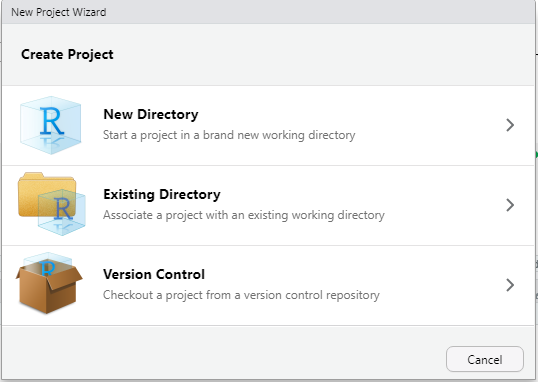

Data Visualization with ggplot
Projects and File Management
Projects are an easy way to keep everything in one place. Creating a project will create a folder for you to keep all of your code files (scripts, .Rmd files, etc.), your data (Excel files, csv files, etc.), plots you want to save and anything else related to your project.
You can create projects by clicking the blue icon at the top right of RStudio, choosing “New Project”, and then “New Directory”. You’ll then have the chance to name your project and choose where on your computer to save it.

Packages
Packages are collections of external software usually designed around a specific theme (visualization, statistics, etc.). Packages can be installed directly from RStudio using the install.packages() function. We’ll be using a package called tidyverse which is actually a collection of packages. Installing tidyverse would look like this:
install.packages("tidyverse")Importantly, you only need to install a package once (unless you want to update it). But to use a package you have to load it every time you start a new RStudio session. This is done with the library() function.
library(tidyverse)We’ll only be using the readr and ggplot2 packages but it’s easier to install all of tidyverse.
Data Import
One common way to import data into R is as csv files. ‘csv’ stands for comma separated values and is an efficient way of storing data as text separated by commas. If you’re working with an excel document you can easily save it as a .csv file. If you already have a lot of excel files that you don’t want to convert, there are packages that will read .xls files as is (see https://readxl.tidyverse.org/).
The read_csv() function from the readr package (included in tidyverse) is the easiest way to read in .csv files. (Note: read.csv() is the Base R equivalent and will work the same, more or less. But if you’re using tidyverse functions I’d recommend using read_csv())
The basic format of read_csv is to pass it either the file name of your data (saved in the same working directory that RStudio is using), or a url to data stored online, using quotes in both cases. And we assign the data to whatever name we want with <-
Here’s how this might look on your computer with a file inside your project folder.
#read csv file and save to name
mydata <- read_csv("my_csv_file.csv")Remember that read_csv() comes from the readr package which is a part of tidyverse. To use it you will have to load either readr or tidyverse using library().
Palmer Penguins
We’ll be using the Palmer Penguin data and we can import it directly from a url.
# load data from online
penguins <- readr::read_csv('https://raw.githubusercontent.com/rfordatascience/tidytuesday/master/data/2020/2020-07-28/penguins.csv') Artwork by @allison_horst
Artwork by @allison_horst
Let’s take a quick look at what the data looks like. We have 8 variables.
head(penguins)## # A tibble: 6 x 8
## species island bill_length_mm bill_depth_mm flipper_length_~ body_mass_g sex
## <chr> <chr> <dbl> <dbl> <dbl> <dbl> <chr>
## 1 Adelie Torge~ 39.1 18.7 181 3750 male
## 2 Adelie Torge~ 39.5 17.4 186 3800 fema~
## 3 Adelie Torge~ 40.3 18 195 3250 fema~
## 4 Adelie Torge~ NA NA NA NA <NA>
## 5 Adelie Torge~ 36.7 19.3 193 3450 fema~
## 6 Adelie Torge~ 39.3 20.6 190 3650 male
## # ... with 1 more variable: year <dbl>ggplot
ggplot2 is the most popular package for plotting in R. It’s built by the same people who make tidyverse and RStudio so it plays well with other tidyverse packages. It’s almost infinitely customizeable and there are lots of external add-ons to make interesting and vibrant visualizations.
Here is a template of what the code for a typical ggplot will look like:
#ggplot template
ggplot(data = <DATA>) +
<GEOM_FUNCTION>(mapping = aes(x, y))Think of ggplots as being constructed in layers. You start with a blank canvas and then add new layers on top of each other. (The “gg” in ggplot stands for “grammar of graphics” which is short for the concept of a “layered grammar of graphics”.)
Every ggplot will start with with the ggplot() function. Every one. Every time. Let’s see what ggplot() gives us by itself.
ggplot()
A blank square. This is our blank canvas that I talked about above. We have the space for a plot but haven’t told ggplot what to put on it yet. Let’s take a look at our template again.
#ggplot template
ggplot(data = <DATA>) +
<GEOM_FUNCTION>(mapping = aes(x, y))After ggplot() you add layers that are called “geoms”. There’s a geom for just about every type of plot you can think of (e.g. geom_point, geom_smooth, geom_boxplot). Geoms tell ggplot what you want to do with the raw data.
Every new layer of a ggplot is separated by a plus sign + on the previous line. Be careful not to forget this.
The required arguments for a ggplot are data and mapping which tell ggplot which dataframe to use and which variables to use, respectively. When you specify a mapping you’ll also use another function called aes(). The variables you use will always go inside the aes() function. I wouldn’t worry about the specifics of aes() right now. Just remember to always put the variables you’re plotting inside it e.g. aes(x, y)
Scatterplots
Do penguins with long flippers also have long bills? We can use geom_point() to make a scatterplot. We have two numeric variables that we want to assign to the x- and y-axes and the names of our variables are bill_length_mm and flipper_length_mm.
ggplot(data = penguins)+
geom_point(mapping = aes(x = bill_length_mm, y = flipper_length_mm))
Named arguments are optional in R so you don’t have to specify things like data= and mapping= (just make sure your arguments are in the right place!).
# this
ggplot(data = penguins)+
geom_point(mapping = aes(x = bill_length_mm, y = flipper_length_mm))
#same as this
ggplot(penguins)+
geom_point(aes(bill_length_mm, flipper_length_mm))Naming arguments is partially up to personal preference. As you become more familiar with functions you might choose to not include argument names to save typing and make code more concise. If you think it would be more clear for yourself or someone else reading your code, you can include some arguments. In some of the following examples I will include the x and y arguments for clarity.
Even better, every geom can take it’s own data and arguments OR you can specify them in your first ggplot() line. Everything in the ggplot() function will be inherited by every line below it. (Tip: Don’t forget commas between arguments.)
# this
ggplot(penguins)+
geom_point(aes(x = bill_length_mm, y = flipper_length_mm))
#same as this
ggplot(penguins, aes(x = bill_length_mm, y = flipper_length_mm))+
geom_point()What this means is that we can easily add extra geoms that use the same data. What if we want to add a line to our scatter plot? geom_smooth() adds a line of best fit with standard error.
# adding a line
ggplot(penguins, aes(x = bill_length_mm, y = flipper_length_mm))+
geom_point()+
geom_smooth()## `geom_smooth()` using method = 'loess' and formula 'y ~ x'
If you want a linear relationship, you can specify method = "lm" (short for “linear model”) inside geom_smooth()
ggplot(penguins, aes(x = bill_length_mm, y = flipper_length_mm))+
geom_point()+
geom_smooth(method = "lm")## `geom_smooth()` using formula 'y ~ x'
Adding extra variables
There are features of a ggplot that can be changed to reflect differences between groups such as colour and shape. These are arguments that can be set inside of the aes() function and provided with a categorical variable to group by.
For example, what if we wanted to colour points by species. We can set the colour argument to be equal to the “species” variable in our data.
# colour by species
ggplot(penguins, aes(x = bill_length_mm, y = flipper_length_mm, colour = species))+
geom_point()+
geom_smooth(method = "lm")## `geom_smooth()` using formula 'y ~ x'
Notice that we also got separate lines for each species. This is because we set colour inside the first ggplot() line, so the grouping is inherited by all the layers below it. If we wanted to only colour the points, we can move the colour argument to geom_point() (inside of it’s own aes() function).
# colour by species
ggplot(penguins, aes(x = bill_length_mm, y = flipper_length_mm))+
geom_point(aes(colour = species))+
geom_smooth(method = "lm")## `geom_smooth()` using formula 'y ~ x'
We can do the same thing with the shape argument.
ggplot(penguins, aes(x = bill_length_mm, y = flipper_length_mm))+
geom_point(aes(colour = species, shape = species))+
geom_smooth(method = "lm")## `geom_smooth()` using formula 'y ~ x'
Displaying a third numeric variable
It can be harder to display three numeric variables in one plot, but one option is to vary point size by the third variable using the size argument.
ggplot(penguins, aes(bill_length_mm, flipper_length_mm))+
geom_point(aes(size = body_mass_g))
This plot is a bit hard to read. It would be helpful if we could see where points are clustering. We can do this by changing how transparent the points are with the alpha argument. Alpha ranges from 0 to 1 with one being solid.
If you want to change an aspect of all of the points (i.e. not based on another variable), you can set that argument outside of aes().
ggplot(penguins, aes(bill_length_mm, flipper_length_mm))+
geom_point(aes(size = body_mass_g), alpha = 0.4)
Themes & Styling
Labels
There are a lot of ways to add labels to your plot but one of the easiest is the labs() function that is added on a new line of your ggplot code. Let’s use our scatterplot example from earlier.
Inside of labs() you can specify labels for your x- and y-axes as well as a title and a subtitle if you’d like. To label your legend, you can add an argument with the same name as the aspect you grouped by (e.g. colour, shape, etc.).
Because we used both colour and shape, we’ll have to do some duplication and change the label for both.
ggplot(penguins, aes(x = bill_length_mm, y = flipper_length_mm))+
geom_point(aes(colour = species, shape = species))+
geom_smooth(method = "lm")+
labs(title = "Bill & Flipper Lengths of the Palmer Penguin Species",
x = "Bill Length", y = "Flipper Length", colour = "Species", shape = "Species")## `geom_smooth()` using formula 'y ~ x'
Themes
All of the aspects of a ggplot are customizeable including, grid lines, backgrounds, spacing, and axis ticks. While these can all be changed individually, ggplot comes with some built-in themes to make your plots look cleaner. ggplot themes act as their own function (i.e. on a new line after +) and have the format theme_*. It’s typical to add a theme function as the last line of your ggplot code. One popular theme is theme_bw()
ggplot(penguins, aes(x = bill_length_mm, y = flipper_length_mm))+
geom_point(aes(colour = species, shape = species))+
geom_smooth(method = "lm")+
labs(title = "Bill & Flipper Lengths of the Palmer Penguin Species",
x = "Bill Length", y = "Flipper Length", colour = "Species", shape = "Species")+
theme_bw()## `geom_smooth()` using formula 'y ~ x'
A personal favorite of mine is theme_classic()
ggplot(penguins, aes(x = bill_length_mm, y = flipper_length_mm))+
geom_point(aes(colour = species, shape = species))+
geom_smooth(method = "lm")+
labs(title = "Bill & Flipper Lengths of the Palmer Penguin Species",
x = "Bill Length", y = "Flipper Length", colour = "Species", shape = "Species")+
theme_classic()## `geom_smooth()` using formula 'y ~ x'
For examples on how to change smaller aspects of a ggplot, see the documentation on the theme() function https://ggplot2.tidyverse.org/reference/theme.html
Categorical Variables
How many observations are there for each penguin species?
geom_bar counts the number of observations in your specified variable. Because the counting is done behind the scenes, you only need to provide one variable (on either the x or y axis; depending on the direction you want your bars to go).
If you already have a dataset of the values you want to plot (e.g. counts or means), geom_col() plots raw values.
ggplot(penguins, aes(species))+
geom_bar()
Adding Variables
Adding additional variables works similar to what we’ve seen before; additional attributes can be specified inside the aes() function. Importantly, “colour” will only colour the borders of the bars in a bar plot, to colour inside the bars, you’ll want to use “fill” instead.
ggplot(penguins, aes(species, fill = island))+
geom_bar()
By default, groups are stacked in bar plots. If you’d like a separate bar for each group you set the position argument in geom_bar to “dodge”.
ggplot(penguins, aes(species, fill = island))+
geom_bar(position = "dodge")
Faceting
We can also create separate plots within plots using ggplot functions like facet_wrap() and facet_grid(). Inside of facet_wrap() you only need to provide the name of the variable you want to facet by after a tilde ~.
ggplot(penguins, aes(x = bill_length_mm, y = flipper_length_mm))+
geom_point()+
geom_smooth(method = "lm")+
facet_wrap(~species)+
theme_bw()## `geom_smooth()` using formula 'y ~ x'
Summary Statistics
There are several geoms that will calculate summary statistics for you, like geom_boxplot()
ggplot(penguins, aes(species, body_mass_g))+
geom_boxplot()
There’s also a corresponding geom_violin() that gives you a better idea of the distribution of your data.
ggplot(penguins, aes(species, body_mass_g))+
geom_violin()
stat_summary()
In all of the geoms we’ve used so far, there are a lot of functions doing the heavy lifting behind the scenes. In most cases, geoms will cover everything you need. But sometimes we might want more control over how our plot is made. This is where the stat_* functions come in, primarily, stat_summary().
Let’s say we wanted a bar plot of the mean body mass for penguins of each species. There’s no geom that calculates a mean and displays bars. geom_bar() only calculates counts by default. Luckily, stat_summary() calculates mean and standard error by default.
ggplot(penguins, aes(species, body_mass_g))+
stat_summary()## No summary function supplied, defaulting to `mean_se()`
Oops, that’s not a bar plot. There’s one more thing we have to change to get our bar plot. stat_summary() has a geom argument that by default is set to “pointrange” which is what we’re seeing above. The geom we want is “bar” so we’ll add an argument inside stat_summary(). We can also add error bars with another stat_summary() layer.
ggplot(penguins, aes(species, body_mass_g))+
stat_summary(geom = "bar")+
stat_summary(geom = "errorbar")## No summary function supplied, defaulting to `mean_se()`
## No summary function supplied, defaulting to `mean_se()`
This plot isn’t that informative about our data. Let’s see if we can do a little better. We can add some transparent points to show how our data are distributed. And we’ll add some transparency to our bars so we can see the points, and add a border around them by setting the size argument. Also, we’ll add some colour using fill just for aesthetics.
ggplot(penguins, aes(species, body_mass_g))+
stat_summary(fun = "mean",
geom = "bar",
alpha = 0.5,
color = "black",
size = 0.5,
mapping = aes(fill=species))+
geom_point(alpha = 0.3)
This a bit better but still not as clear as it could be. We still can’t see the distribution of the individual data points that well. We can use a useful function called geom_jitter() to fix this. geom_jitter() adds a small amount of random noise to points so you can more easily see where points are clustering. We set how much it “jitters” the data using the height and width arguments. geom_jitter() is also useful for crowded scatter plots.
ggplot(penguins, aes(species, body_mass_g))+
stat_summary(fun = "mean",
geom = "bar",
alpha = 0.5,
color = "black",
size = 0.5,
mapping = aes(fill=species))+
geom_jitter(width = 0.1, height = 0.1, alpha = 0.3)
This is better but because our data have relative high means with little variation, we have all this extra space in the bars. One option would be to zoom in on you plot using something like coord_cartesian() which lets you set the limits of your axes. In this case, we’re changing the ylim argument.
ggplot(penguins, aes(species, body_mass_g))+
stat_summary(fun = "mean",
geom = "bar",
alpha = 0.5,
color = "black",
size = 0.5,
mapping = aes(fill=species))+
geom_jitter(width = 0.1, height = 0.1, alpha = 0.3)+
coord_cartesian(ylim = c(2500, 6400))+
theme_bw()+
guides(fill = FALSE)+ #get rid of legend
labs(x = NULL, y = "Body Mass (g)")
This definitely looks better but maybe we could do more to represent the distribution in this data. geom_violin() can help with this. We’ll add in some mean lines with stat_summary() and geom “crossbar”.
ggplot(penguins, aes(species, body_mass_g))+
geom_violin(alpha = 0.1, mapping = aes(fill = species), show.legend = F)+
geom_jitter(width = 0.05, height = 0.05, alpha = 0.3)+
stat_summary(fun = "mean", geom = "crossbar", width = 0.3)+ # mean lines
theme_bw()+
labs(x = NULL, y = "Body Mass (g)")
Bonus
One of the benefits of ggplot is it’s infinite customizeability. There are a ton of add-ons that let you make more complex and more effective lots. Here’s a small-scale example using a function called geom_flat_violin() by Ben Marwick. I source the function directly from a link where the code is hosted online but it can also be found in the PupillometryR package.
source("https://gist.githubusercontent.com/benmarwick/2a1bb0133ff568cbe28d/raw/fb53bd97121f7f9ce947837ef1a4c65a73bffb3f/geom_flat_violin.R")
ggplot(penguins, aes(species, body_mass_g, fill=species))+
geom_boxplot(width = 0.2, outlier.shape = NA, alpha = 0.8)+
geom_flat_violin(position = position_nudge(x = 0.2, y = 0), alpha = 0.8)+
geom_jitter(width = 0.1, alpha = 0.5, size = 1)+
guides(fill = FALSE, color = FALSE)+ # get rid of legend
theme_classic()+
labs(x = NULL, y = "Body Mass (g)\n")
Plotly
Plotly is a software that works across many platforms and languages and is used to make interactive visualizations. In R there’s a package called plotly. Mouse over the points in the plot below to see how it works!
ex <- ggplot(penguins, aes(x = bill_length_mm, y = flipper_length_mm))+
geom_point(aes(colour = species))+
geom_smooth(method = "lm")+
theme_bw()
plotly::ggplotly(ex)## `geom_smooth()` using formula 'y ~ x'There are lots of similar add-ons for ggplot. Try gganimate for animated plots, or the patchwork package for combining multiple ggplots into one figure.
Resources
From Data to Viz: https://www.data-to-viz.com/
R for Data Science: https://r4ds.had.co.nz/
ggplot Textbook: https://ggplot2-book.org/
Data Sourced from: https://allisonhorst.github.io/palmerpenguins/
Alexander Albury
PhD Candidate
PhD Candidate at Concordia studying music cognition.